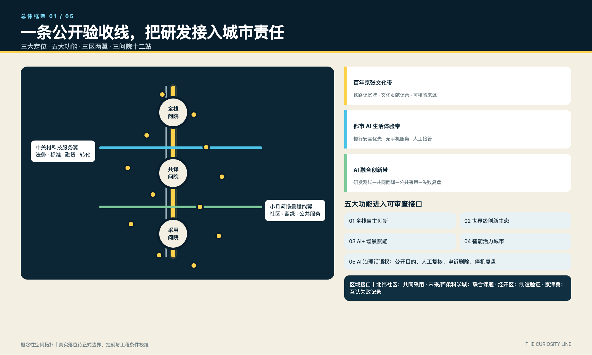
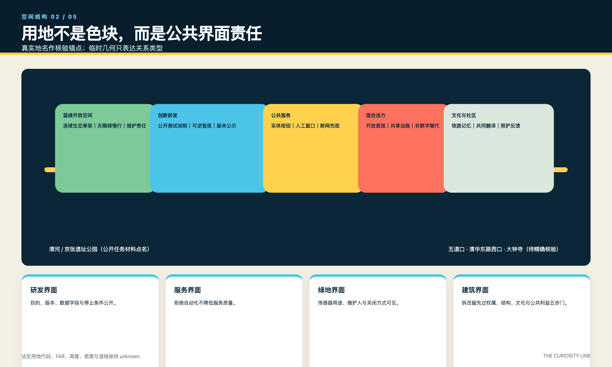
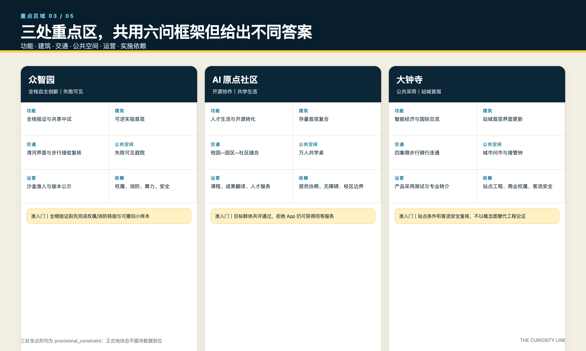
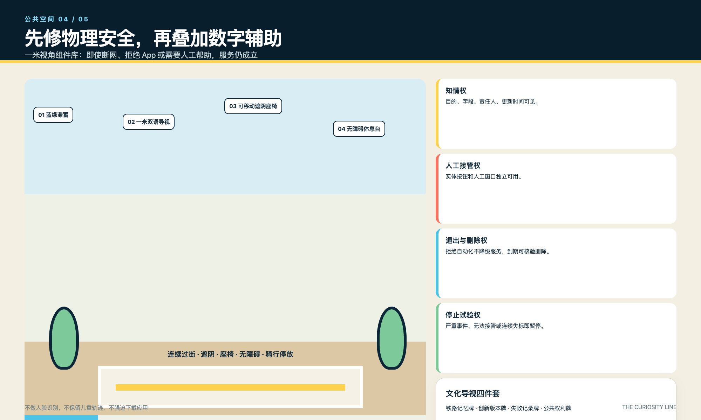
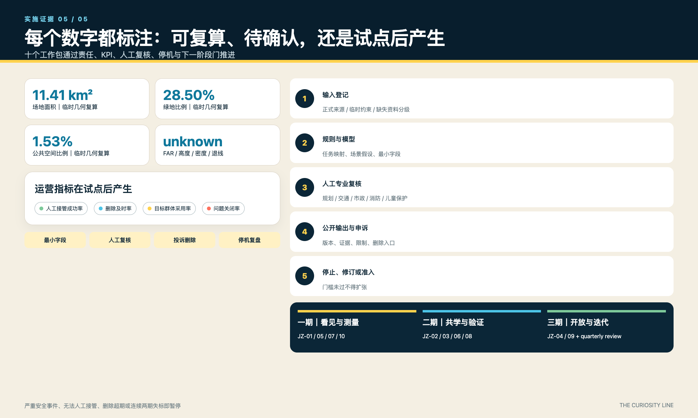

证据边界： SITE_BOUNDARY 与三处 KEY_AREA 仍为 provisional_constraint，仅供生成、讨论与复算；FAR、高度、密度、退线和拆改留结论保持 unknown / pending。
01 / 总体框架
一条公开验收线，
把研发接入城市责任
三大定位、五大功能、三区两翼不再停留在口号，而是进入公开目的、人工复核、投诉删除、停机复盘的治理接口。
11.41 km²场地面积临时几何复算
28.50%绿地比例临时几何复算
1.53%公共空间比例临时几何复算
10更新工作包责任与门槛推进
总览地图三层范围用地分区交通慢行蓝绿公共空间更新项目AI 场景核心指标任务覆盖自检状态：四门本地复核
02 / 交互工作台
选择图层，查看每条空间线如何承担责任
这是概念性关系图，不是精确地图。键盘可操作；关闭动画偏好会被尊重。
公开问题/主线科技服务翼场景赋能翼人工接管/停止
三大定位
百年京张文化带 · 都市 AI 生活体验带 · AI 融合创新带
五大功能
全栈创新 · 世界级生态 · AI+场景 · 智能活力 · AI治理话语权
区域接口
北纬社区共同采用；未来/怀柔科学城联合课题；经开区制造验证；京津冀互认失败记录。
03 / 重点区域
同一套六问框架，
三处重点区给出不同答案
选择区域查看功能、空间动作、运营人与进入下一阶段的门槛。
功能全栈验证与共享中试
建筑可逆实验首层
交通清河界面与步行接驳复核
公共空间失败可见庭院
运营沙盒准入与版本公示
依赖权属、消防、算力与安全
准入门：完成权属/消防核验与可撤回小样本，才进入全楼验证。
功能人才生活与开源转化
建筑存量首层复合
交通校园—园区—社区慢行缝合
公共空间万人共学桌
运营课程、成果翻译与人才服务
依赖居民协商、无障碍与校区边界
准入门：目标群体共评通过；拒绝 App 仍可获得同等服务。
功能智能经济、公共采用与国际交流
建筑站城首层界面更新
交通四象限步行与骑行连通
公共空间城市问市与人类接管钟
运营产品采用测试与专业转介
依赖站点工程、商业权属与客流安全
准入门：站点条件与客流安全通过专业复核，不以概念图替代工程论证。
04 / 公共利益
一米视角不是尺度口号，
而是四项可执行权利
先修过街、遮阴、座椅和无障碍，再讨论导航与预测。拒绝自动化不降低服务质量。
知情权
目的、字段、责任人、更新时间和关闭方式可见。
人工接管权
实体按钮、纸质流程和人工窗口独立可用。
退出与删除权
不做人脸识别、不留儿童轨迹；到期删除可核验。
停止试验权
严重事件、无法接管或连续两期失标即暂停。
05 / 产业测试
三项测试，把创新写成可停止的生命周期
TVS-01
低速机器人安全课
- 现场安全员一键停机
- 安全事件为零方可准入
- 不记录儿童身份与轨迹
TVS-02
儿童友好解释赛
- 教师、照护者、儿童观察组共评
- 解释失败记录公开
- 投诉与到期删除可核验
TVS-03
公共服务退出演练
- 断网仍可人工服务
- 拒绝 App 不降低质量
- 人工接管失败立即暂停
06 / 实施路径
十个工作包，
通过门槛而不是愿景推进
每项工作包都绑定建议责任角色、资源等级、阶段 KPI、人工复核、停机条件和下一阶段准入。
1输入登记
正式来源 / 临时约束 / 缺失资料分级
一期｜看见与测量
JZ-01 / 05 / 07 / 10
二期｜共学与验证
JZ-02 / 03 / 06 / 08
三期｜开放与迭代
JZ-04 / 09 + 季度体检
07 / 专业图件
五张图，五个不同的审查问题
静态图件是交互体验的可打印替代，并继续保留临时几何与数据缺口声明。

总体框架：定位、功能、两翼与区域接口
空间结构：用地关系与公共界面责任
重点区：功能、空间、运营和依赖
公共空间：物理安全、组件与四项权利
实施证据：指标状态、复核流程和工作包分期